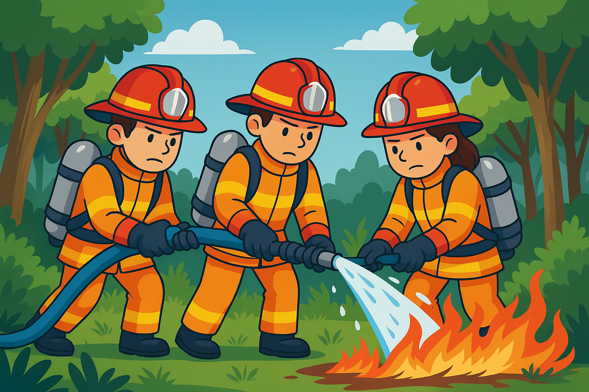

🧯 Yangınlardan Nasıl Korunuruz?
Yayın Tarihi: 2 Haziran 2025
Türkiye’nin orman varlığı açısından en zengin bölgelerinden biri olan Muğla, yaz aylarında yangın riski en yüksek iller arasında yer alıyor. Yangınların %90’ından fazlası insan kaynaklı. Bu da demek oluyor ki aslında pek çoğu, basit önlemlerle engellenebilir.
Bu yazımızda hem bireysel olarak hem de toplum olarak yangınlara karşı nasıl daha hazırlıklı olabiliriz, hangi önlemleri alarak felaketlerin önüne geçebiliriz, bunları anlatıyoruz.
🔥 Evde Alınabilecek Önlemler
- Çakmak, kibrit gibi yanıcı maddeleri çocukların erişemeyeceği yerlerde saklayın.
- Elektrik prizlerinde çoklu priz kullanırken aşırı yüklenmeden kaçının.
- Yangın söndürücü ve duman dedektörü gibi araçları evinizde mutlaka bulundurun.
- Olası bir yangın anında tahliye planı hazırlayın ve ev halkıyla paylaşın.
🌲 Doğada Yangından Korunma
- Ormanlık alanlarda ateş yakmayın. Piknik sonrası ateşin tamamen söndüğünden emin olun.
- Cam şişeler gibi güneş ışığını yansıtarak yangın başlatabilecek nesneleri doğaya bırakmayın.
- Sigara izmaritlerini gelişigüzel atmayın, mutlaka söndürülmüş şekilde çöp kutusuna atın.
👨👩👧👦 Toplum Olarak Neler Yapabiliriz?
- Mahallelerde gönüllü yangın timleri kurulabilir.
- Çocuklara ve gençlere yönelik yangın eğitimi programları düzenlenebilir.
- Yerel yönetimlerle iş birliği yaparak uyarı sistemleri geliştirilebilir.
🚒 Acil Durumda Ne Yapmalı?
Eğer bir yangına şahit olursanız hemen ALO 112 Acil Çağrı Merkezi’ni arayın. Yangına müdahale etmeye çalışmayın; ancak çevredekileri uyarmak, tehlikeden uzaklaştırmak gibi sorumluluklar alabilirsiniz.
🎒 Çocuklar İçin Bilgilendirme
Çocuklara yangınların oyun olmadığını, ateşin dikkatli kullanılması gerektiğini anlatmak büyük önem taşır. Evcilik oynarken bile kibrit veya çakmakla oynamak tehlikelidir. Okullarda eğitici animasyonlar, resimli hikâyeler ve oyunlarla bu konu öğretilebilir.
Yangınları önlemek, sadece itfaiyenin değil hepimizin sorumluluğu. Unutmayalım, küçük bir kıvılcım büyük bir felakete dönüşebilir. Önlem al, farkındalık yarat, doğayı birlikte koruyalım.